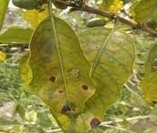
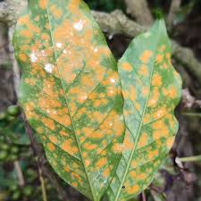
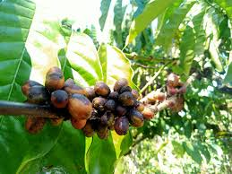
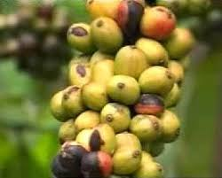

Daftar Penyakit Kopi

Bercak Daun (Cercospora coffeicola)
Gejala: Daun tanaman kopi menunjukkan bercak coklat dengan tepi yang berwarna kekuningan.
Pengendalian:
- Pemangkasan daun yang terinfeksi.
- Pemberian fungisida yang mengandung tembaga atau mancozeb.
- Menghindari kelembapan yang berlebihan di sekitar tanaman.

Karang Kopi (Hemileia vastatrix)
Gejala: Daun kopi berubah warna menjadi kuning dan tampak bercak-bercak oranye yang merupakan pustula spora jamur.
Pengendalian:
- Menggunakan varietas kopi yang tahan terhadap penyakit karang.
- Penyemprotan fungisida berbahan aktif seperti triadimenol, tebukonazol, atau propikonazol.
- Pemangkasan cabang yang terinfeksi dan menjaga kebersihan kebun.

Busuk Akhir (Phytophthora spp.)
Gejala: Akar kopi membusuk, menyebabkan tanaman layu dan mati. Pembusukan juga dapat menyerang batang.
Pengendalian:
- Penggunaan fungisida seperti fosetil-aluminium atau metalaksil.
- Pengaturan drainase yang baik untuk menghindari genangan air.
- Penghindaran penyiraman berlebihan.

Bercak Hitam pada Buah Kopi (Colletotrichum spp.)
Gejala: Buah kopi yang terkena serangan menjadi hitam, keras, dan tidak dapat dipanen.
Pengendalian:
- Penyemprotan fungisida yang mengandung mankozeb atau kaptafol.
- Pengelolaan tanaman dengan jarak tanam yang cukup agar sirkulasi udara lancar.